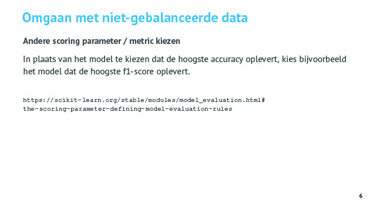

Niet gebalanceerde data NN
Tags: AI andere
Date: 2021-02-23
Type: Cursus topic
Related:
Source :
Notities
Imbalanced Data
Niet gebalanceerde data is data waarbij één klasse veel dominanter aanwezig is dan de andere klasses.
Probleem
Het probleem hiermee is dat als je hier een model op traint dat het model wordt getraind om de beste accuraatheid te hebben maar dan blijkt dat het model een voorkeur heeft gekregen voor de meerderheidsklasse.
Dit kan je zien aan de resultaten voor de recall. De recall voor de meerderheidsklasse is hoog en de voorspellingen zijn goed maar dat van de minderheidsklasse is slecht. Het model geeft een voorkeur voor de meerheidsklasse omdat het zonder moeite een hoge accuraatheid haalt hiervoor.
Dit is meestal niet wenselijk en men wil een een meer gebalanceerd resultaat hebben.
Technieken
Technieken om dit proberen op te lossen :
- verzamel meer data (van de minderheidsklasse) zodat de klasses meer in evenwicht komen. In de praktijk is dat niet altijd mogelijk.
- undersampling / oversampling :
undersampling : door gans deel van meerderheidsklasse weg te doen en hierdoor een meer gebalanceerde data te krijgen. Het nadeel is dat je hierdoor feature waarden verliest die nodig misschien waren om een goed model te hebben.
het omgekeerde, oversampling, is de minderheidsklasse vermeerderen door copies te nemen. Dit is beter dazn undersampling maar het probleem is wel dat je geen echt nieuwe informatie toevoegt. Je model leert niet echt iets nieuw bij. - andere scoring parameter/metric kiezen :

niet accuracy gebruiken maar f1 score of beste recall voor hyperparametertuning - class weight balancing :

ervoor zorgen dat tijdens training bij foute predicties de loss op de minderheidsklasse zwaarder wordt afgestraft. Dit doe je door bij model.fit class_weights mee te geven zodat loss proportioneel meer gaat doorwegen voor minderheidsklasse.
Je kan ook met een andere loss functie werken. - data augmentation : SMOTE
obv bestaande samples worden er nieuwe samples aangemaakt die dicht liggen bij de minderheidsklasse. - image augmentation :
obv bestaande afbeelding nieuwe versies van afbeeldingen maken (geroteerde, ingezoomd, kleur veranderen, ruis toevoegen, ... ). Ook te gebruiken als je bijv gewoon weining samples hebt.
Anki
Q: Wat is niet gebalanceerde data ? Wat kan het effect zijn op een classifier ?
A: Niet gebalanceerde data is data waarbij één klasse veel dominanter aanwezig is dan de andere klasses. Het model gaat hierdoor de voorkeur geven aan de meerderheidsklasse.
Q: Hoe kan je voorkomen dat een classifier voorkeur gaat geven aan een klasse die minder voorkomt in de data ?
A: De mogelijkheden zijn :
- verzamel meer data van de minderheidsklasse
- undersampling : klasses uitbalanceren (data uit meerderheidsklasse verwijderen)
Nadeel : dat eigenschappen die in geschrapte data zaten gaan verloren - oversampling : minderheidsklasse vermeerderen/copieren
Nadeel : geen nieuwe informatie toegevoegd - andere scoring parameters/metric kiezen : model kiezen met beste F1 score, of recall ipv accuracy
- class weight balancing : misclassificatie van sample uit minderheidsklasse leiden in training tot hoger loss (meer afgestraft). Dit doe je door bij model.fit class_weights mee te geven zodat loss proportioneel meer gaat doorwegen voor minderheidsklasse.
- data augmentation - SMOTE : obv bestaande samples worden er nieuwe samples aangemaakt die dicht liggen bij de minderheidsklasse. (from imblearn_over_samplng import Borderline.SMOTE)
- image augmentation : obv bestaande afbeelding nieuwe versies van afbeeldingen maken (geroteerde, ingezoomd, kleur veranderen, ruis toevoegen, ... ). Ook te gebruiken als je bijv gewoon weining samples hebt.
- drempelwaarde zelf kiezen : probability opvragen en zelf de grens trekken vanaf wanneer de minderheidsklasse gekozen wordt.
Q: Hoe kan je zien dat het model een voorkeur heeft voor de meerderheidsklasse bij niet gebalanceerde data ?
A: Dit kan je zien aan de resultaten voor de recall. De recall voor de meerderheidsklasse is hoog en de voorspellingen zijn goed maar dat van de minderheidsklasse is slecht. Het model geeft een voorkeur voor de meerheidsklasse omdat het zonder moeite een hoge accuraatheid haalt hiervoor.
Dit is meestal niet wenselijk en men wil een een meer gebalanceerd resultaat hebben.
Q:
A: